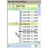
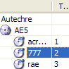
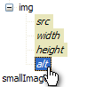
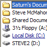
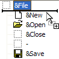
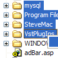

vbAccelerator Explorer Bar Control
vbAccelerator Explorer Bar Control
 vbAccelerator ListView Control
vbAccelerator ListView Control
 vbAccelerator Scroll Buttons Control
vbAccelerator Scroll Buttons Control
 vbAccelerator NeoCaption Component v2.0
vbAccelerator NeoCaption Component v2.0

TreeView Index
|  | vbAccelerator TreeView ControlThis article provides a new TreeView control that provides an alternative to the standard version provided with VB. Enhancements include much wider support for item colours and formatting, better drag-drop support including node auto-expand and scrolling, styles to support numbering items and an IE-style history mode and an improved object model. Last Updated: 16 April 2004 |
|  | Multi-Column TreeView ControlThis article provides a control which extends the vbAccelerator TreeView control to provide multiple columns, complete with headers for each of the columns. Last Updated: 15 April 2004 |
|  | XML Rendering in a TreeViewThis short sample demonstrates rendering an XML document in the vbAccelerator TreeView control. XML document rendering uses multiple fonts and node colouring to highlight the different node types and attributes in the documents and also shows the XPath expression needed for any node in the Tree and may prove handy if you're experimenting with XSLT. Last Updated: 16 April 2004 |
|  | Displaying Shell Elements in a TreeViewThis article demonstrates a very simple way to populate a TreeView with files and or folders using the Shell Automation Object provided in Shell32.DLL. Using this object in combination with a System Image List allows you to easily provide a browsable view of the file system with correct icons for each element. Last Updated: 16 April 2004 |
|  | Drag Drop and the vbAccelerator TreeView ControlOne of the main design aims behind the vbAccelerator TreeView control was to enable more configurable and managable drag-drop operations to be performed. This article describes how to use the drag-drop features in two simple sample projects. Last Updated: 16 April 2004 |
|  | Multiple Selections in a TreeViewThis example provides a class which you can attach to the vbAccelerator TreeView control to provide multiple selection support in a TreeView. Although Windows TreeView controls don't actually support multi-select, you can emulate it by using Owner-Drawing to set the colours of the nodes. This technique is similar to the one used in the Eclipse Java IDE. Last Updated: 10 March 2004 |
 | Hierarchy Selector ControlThe Hierarchy Selector control is an enhanced COMCTL32.OCX TreeView control which allows you to easily create option dialogs like the Win98 Folder Options dialog and the Internet Explorer Advanced option dialog. In addition to this, it also provides methods which allow you display a hierarchy of options to the user and allow them to easily select the items of interest. Last Updated: 25 August 1999 |